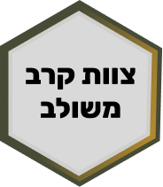

כל כוח צבאי מסוגל להפיק מעצמו עוצמה נתונה שאופיינית רק לו. איגבור, או סינרגיה, הוא התהליך שבו מצרפים את העוצמות של חילות שונים הפועלים יחד ובתיאום כלפי מטרה אחת. התוצאה: סך העוצמה שתופק מהפעלתם המתואמת יחד תהיה רבה וגדולה משמעותית מאשר אילו כל חיל היה פועל בנפרד כלפי אותה מטרה. במילים פשוטות – השלם גדול מסך חלקיו!
כאשר משלבים כוחות מחילות שונים המצוידים באמצעי לחימה שונים לפעולה משותפת, כל כוח יכול להתמקד במשימתו מבלי להידרש לאבטח את עצמו. במצב כזה, כל חיל פנוי להפיק את היעילות המרבית מעוצמתו.
